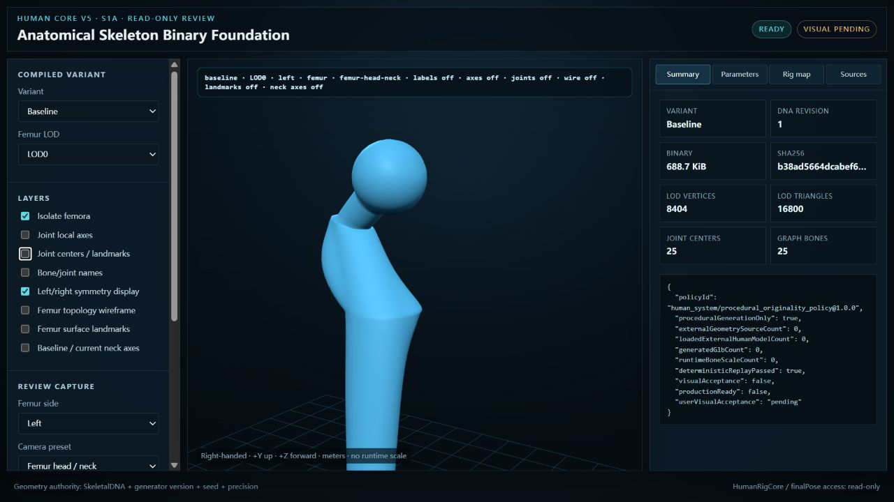
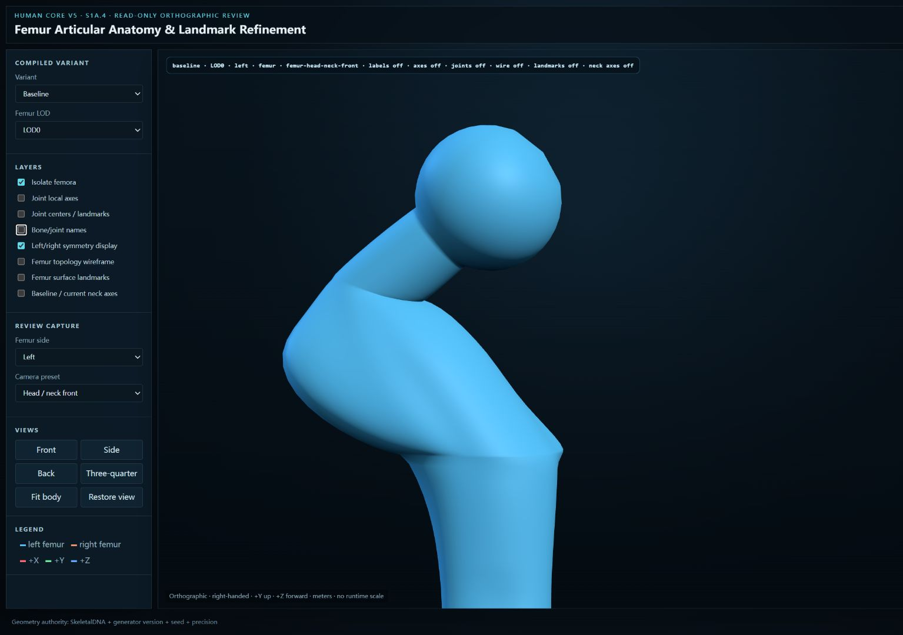
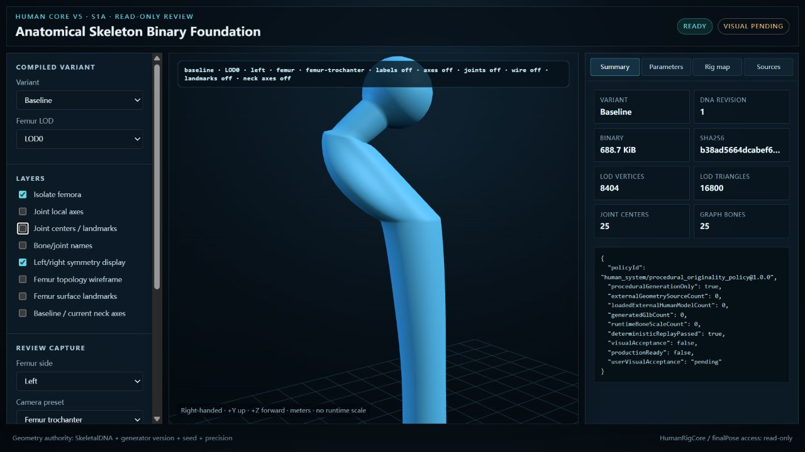
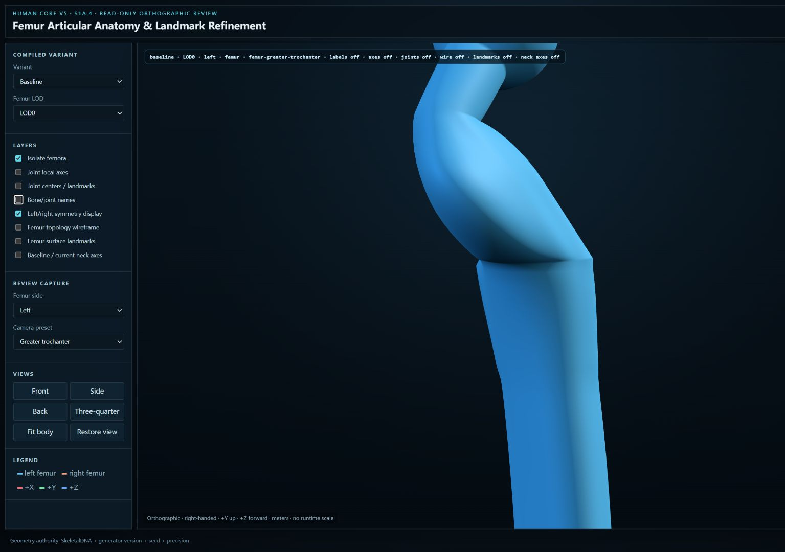
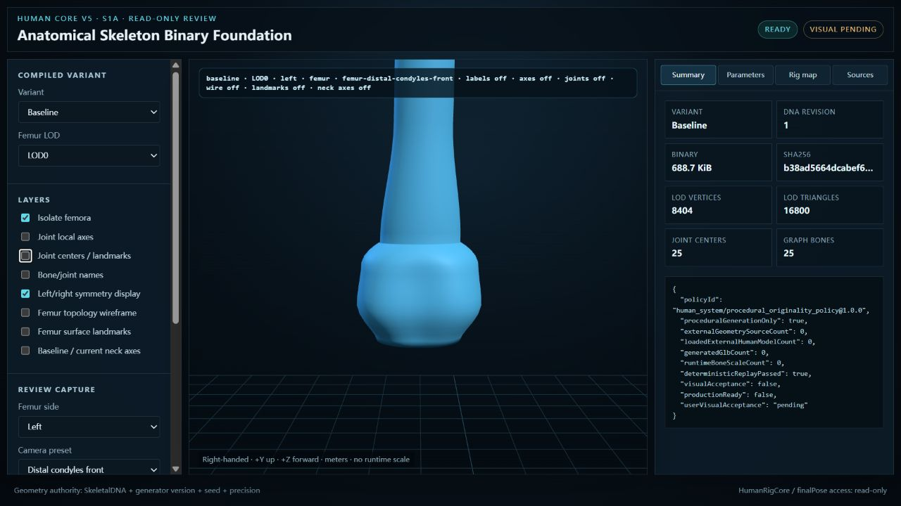
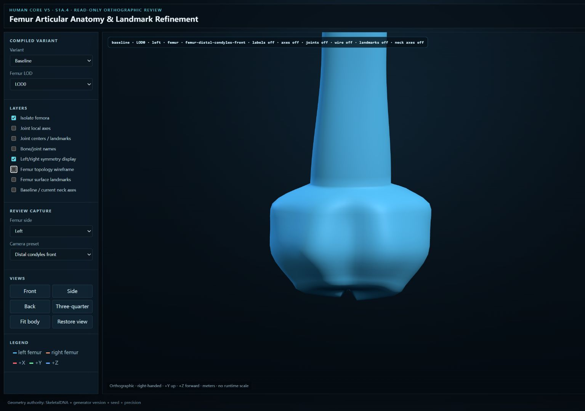
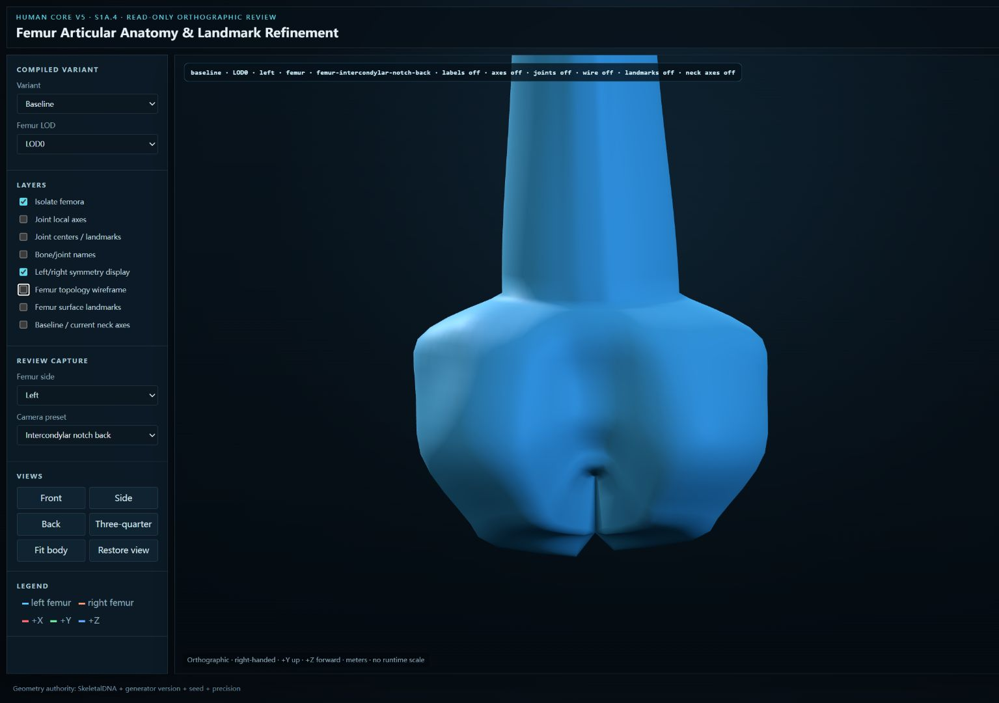

S1A.2 · head / neck
S1A.2 · head / neck

S1A.3 · head / neck

S1A.4 · head / neck · orthographic
 S1A.2 · trochanters
S1A.2 · trochanters

S1A.3 · trochanters

S1A.4 · greater trochanter
 S1A.2 · distal front
S1A.2 · distal front

S1A.3 · distal front

S1A.4 · distal front · trochlea
 S1A.2 · distal back
S1A.3 · distal back
S1A.2 · distal back
S1A.3 · distal back

S1A.4 · distal back · fossa